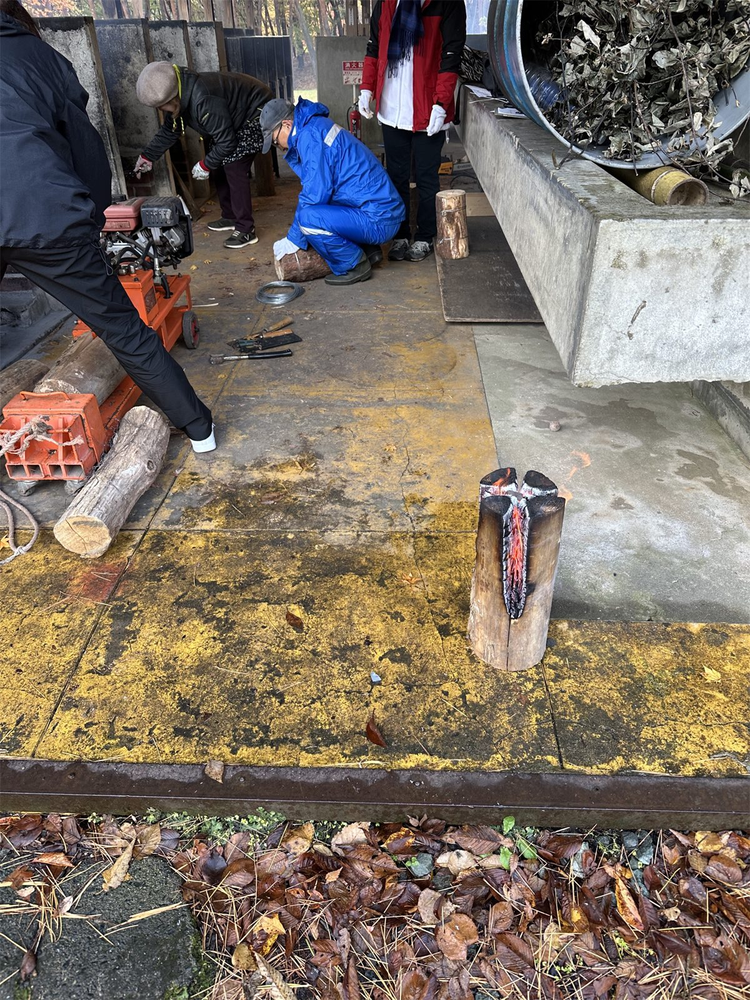
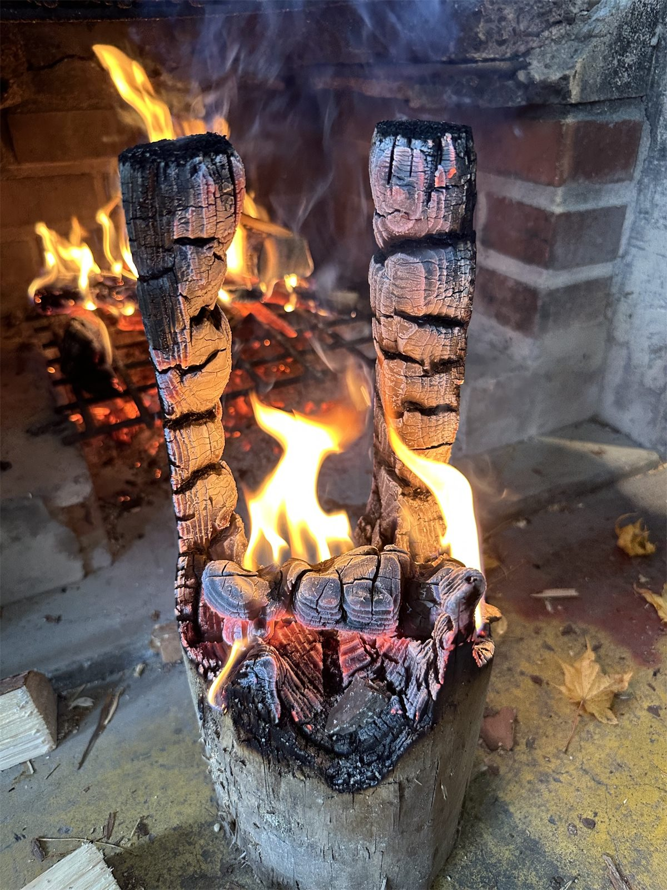
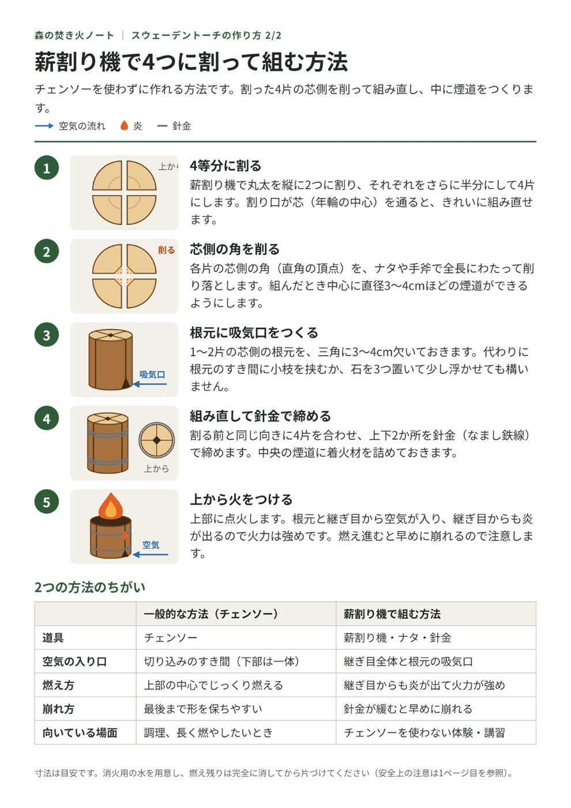
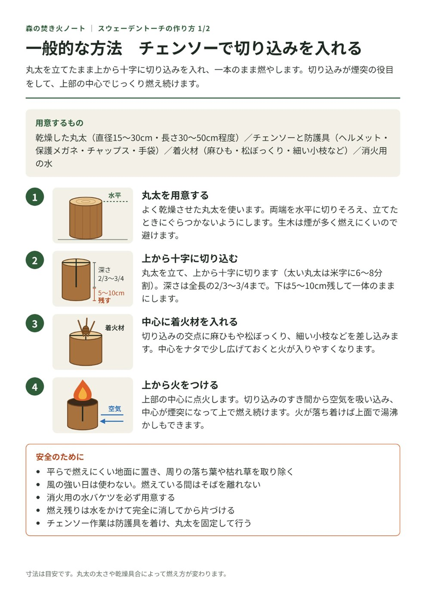
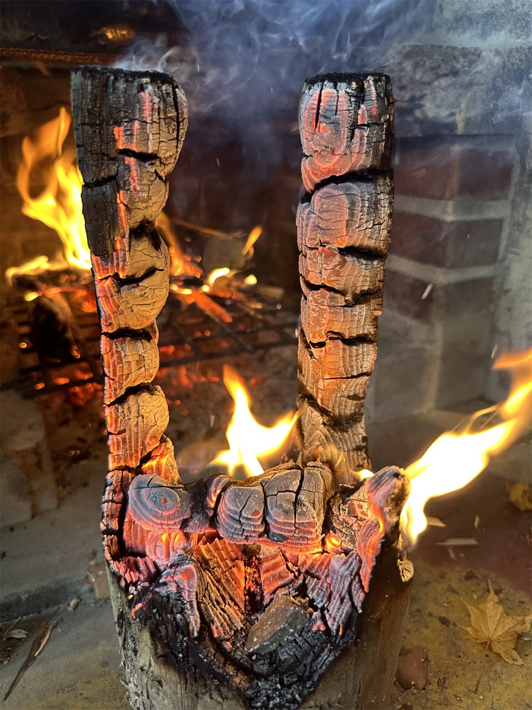

開催概要
| 日時 | 11月7日(土) 10:00〜12:00（開催済み） |
|---|---|
| 場所 | 都南つどいの森 |
| 内容 | チェンソーを使わない方法でスウェーデントーチを作り、ひとり3個ずつ持ち帰りました。 |
| 対象 | 岩手県内在住の方 |
| 定員 | 15人（抽選） |
| 費用 | 1,000円（材料費・保険代等） |
| 問い合わせ | 都南つどいの森 019-637-0877 |
※ このワークショップは終了しています。ご参加のみなさま、お疲れさまでした。
当日の様子
丸太を薪割り機で4つに割り、組み直して針金で締めていきます。動画と写真で当日の様子をご覧いただけます。写真をクリックすると大きく表示されます。


作り方
今回は資料の2ページ目の方法で作りました。薪割り機で丸太を4つに割り、芯側の角を削って煙道をつくり、針金で締めて組み直します。1ページ目には、チェンソーで切り込みを入れる一般的な方法と、火を扱うときの注意をまとめています。
スウェーデントーチの作り方（A4・2ページ）
チェンソーを使う方法と使わない方法の手順、2つの方法のちがいを図入りでまとめた資料です。


燃え残りの柱に並んだ、横の線
燃え進んだトーチの柱には、横向きの太い溝が数cmおきに並びました。これは炭化割れ（収縮亀裂）という割れ目です。木が炭になって縮むとき、内側のまだ燃えていない木に引き止められた炭の層が、引っ張られて裂けたものです。全体が亀の甲羅のような模様になるので亀甲割れとも呼ばれ、英語ではワニの皮に見立てて alligatoring（アリゲータリング）といいます。

なぜ横向きに割れるのか
木を乾かすと、太さの方向には大きく縮みますが、繊維の方向（柱の縦方向）にはほとんど縮みません。生木から乾かしても0.1〜0.3%ほどです。ところが炭になると、繊維の方向にも10%以上縮みます。
表面の炭の層は縮もうとしますが、内側のまだ燃えていない木にくっついているので、思うように縮めません。そのため炭の層は縦に引っ張られ、繊維を横切る向き、つまり横向きに割れます。縦に入っている細かいひびは、もともと縮みやすい、繊維と直角の方向の収縮でできたものです。
なぜほぼ等間隔になるのか
干上がった田んぼのひび割れや、玄武岩の柱状節理と同じしくみです。下の図は、柱を縦に切った断面の模式図で、右側が燃えている表面です。
- 炭の層は縮もうとしますが、内側の木に引き止められ、引っ張られた状態になります。
- 1本割れると、その両側では引っ張る力が抜けます。力が抜ける範囲の幅は、炭の層の厚さに比例します。
- その範囲から外れたところでは再び力がたまり、限界を超えると次の割れが入ります。
この繰り返しで、割れの間隔は炭の層の厚さの数倍あたりにそろいます。燃え進んで炭の層が厚くなると、細かい割れの一部だけが深く広がっていきます。太い溝が数cmおきにくっきり並ぶのは、炭化がかなり深くまで進んだ証拠です。
同じしくみの割れ目
焼き板の表面、田んぼのひび割れ、柱状節理。材料も大きさもちがいますが、「縮むものが土台に引っ張られると、規則的に割れる」という点は共通しています。